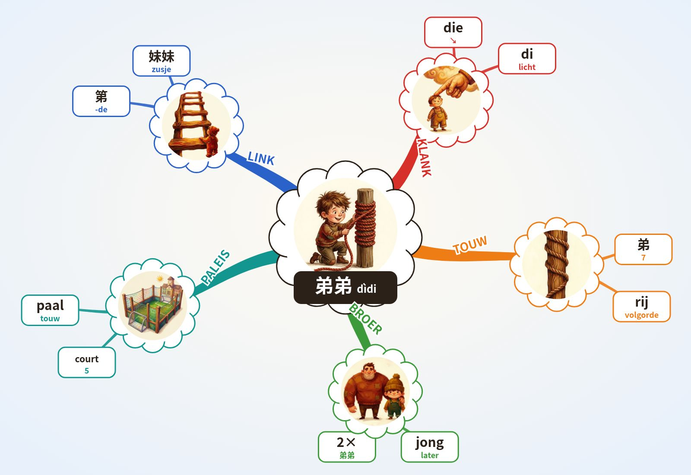

WOORD DIEPTE 4.6 · Chinese leren 4.6
弟弟 dìdi · 4+0 · jongere broer
Formule
Chinees: Mandarijn, moedertaalstem. NL/EN/ES: klank-haken, geen vertaling.
Klank-haken NL · EN · ES
NL die ↘ + di (licht): “DIE daar, die kleine: mijn broertje.”
EN D! ↘ + d (light): “D! d: big D, little d, my little brother.”
ES ¡di! ↘ + di (suave): “¡Di! di: dilo, hermanito.”
→ 1e toon hoog en vlak · ↗ 2e toon stijgt · ↘↗ 3e toon zakt en veert terug · ↘ 4e toon valt hard · licht = neutrale toon.
Paleis · Lorentz Lyceum, 10 stops
- Spoorviaduct het hele station hangt boven de Metamorfosenallee
- Stationsgebouw verkeersgebouw van Edwin Megens, 2005
- Beschilderde pijlers muurschildering 2024: groen, geschiedenis, wijk
- Metalen gevel Lorentz gevelsysteem van Rakon (?)
- Cruijff-court kooiveld op het schoolplein
- Glaswand aula grote glazen buitenwand
- Zittrap brede trap die tribune is
- Vleugel vleugel in de aula
- Atrium hart van de school, grafische prints op de wanden
- Zwevende gymzaal sportzaal opgetild naar de 1e verdieping
O'Brien: 5 Op het Cruijff-court wikkelt mijn broertje een touw rond de doelpaal, rondje na rondje. IK roep: DIE! ↘ di.
Alleen echte, unieke kenmerken (monument-regel). (?) = niet zeker.
Mindmap (Buzan)

Buzan: centraal beeld · gebogen takken, dik bij het midden · 1 woord per lijn · beeld per tak · kleur per tak · radiaal, met de klok mee vanaf KLANK.
3 schrift · streken
弟 heel teken: touw om een paal gewikkeld (volgorde) · tweede 弟 = neutrale toon
Oefen met je vinger
Tik op Oefen en teken streek 1.
Streken · namen
De hanzi bij elke streek is de officiële streeknaam die je in elk Chinees schrijfboek vindt, geen lesstof. Tik of houd de naam vast voor de betekenis.
Opbouw · 弟 7 streken (2×)
Rood = de nieuwe streek.
Streekvragen
Verbindingen (andere woorden)
Geschiedenis
Twijfel
4 beeld
IK zie mijn broertje een touw om een paal wikkelen: hij is de laatste in de rij.
Scène (Lorentz)
5 actief recall
Recall-tabel
| Nr | Hersenen | Teken | Station | Volgende |
|---|---|---|---|---|
| 1 | Leerling A | 弟 | Cruijff-court | jiějie |
Dek de kaart af. Loop het paleis, zeg klank + toon, schrijf het teken op papier. Pas daarna verder.